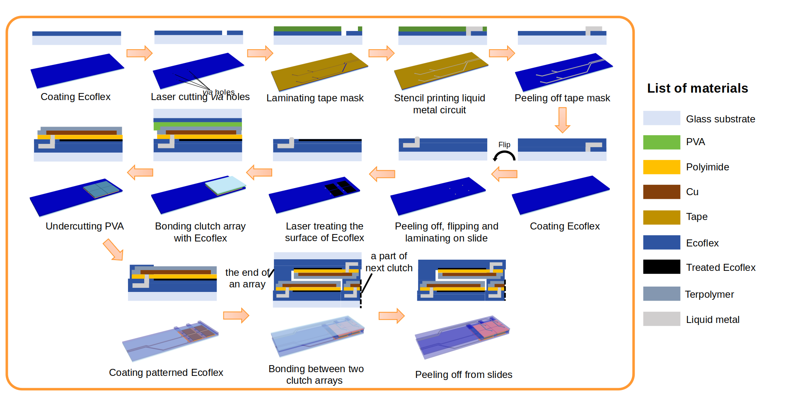
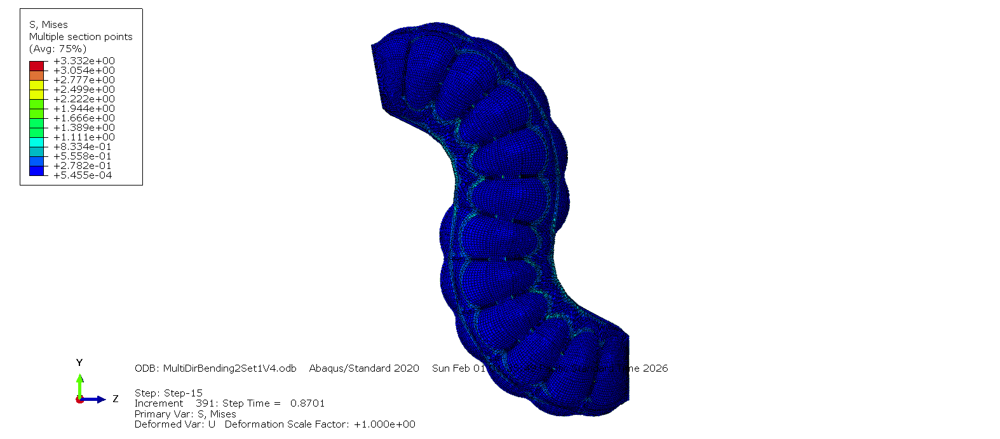

Fabrication Process & Testing



High-Precision Manufacturing for Soft Actuators
Soft robotic actuators often suffer from low force output and complex manufacturing requirements, which limits their real-world application. At the Zhao Research Group, I am currently addressing this by developing Electro-Programmable Clutch Arrays. These are flexible, high-voltage actuators that can selectively lock and unlock mechanical joints to enable versatile movement.
My primary challenge was fabricating these multi-layer stacks with extreme precision because any variation in dielectric thickness leads to immediate electrical breakdown and short circuits. I engineered a robust micro-fabrication process that integrates photolithography, wet etching, and precision blade coating. The device architecture required a stack-up of Ecoflex 0031 substrates, copper electrodes, and a custom PVDF-TrFE-CFE dielectric layer. I utilized Design of Experiments (DOE) to optimize the spin-coating speeds and curing cycles to achieve a consistent dielectric layer thickness of less than 50µm.
This optimization ensured uniform electrostatic field distribution across the entire array. The new fabrication process yielded functional clutch arrays capable of withstanding high electric fields without failure. Mechanical testing validated that the devices generate a shear force capacity of 43.97 N/cm², which is a critical threshold for functional soft robotic gripping and locomotion. This success reduced prototype failure rates and established a repeatable workflow for future soft-robotics research.
Developing multi-step cleanroom processes including spin coating and photolithography for flexible electronics.
Using statistical methods (DOE) to refine manufacturing parameters and ensure <50µm layer tolerance.
Working with advanced dielectric polymers (PVDF-TrFE-CFE) and conductive composites.
Designing validation rigs to measure shear force and electrostatic actuation performance.